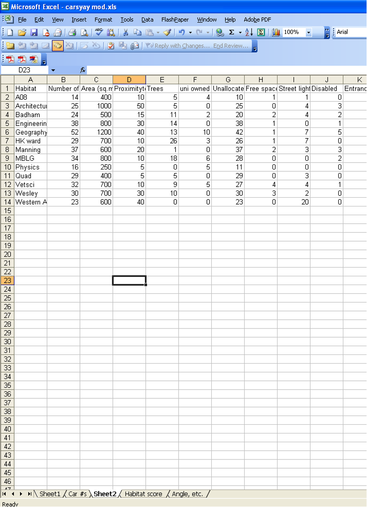
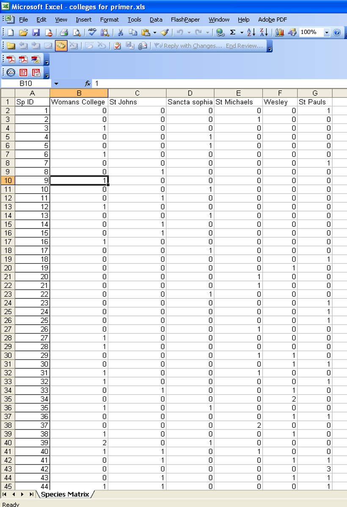

Week 10: Permutational techniques
The aim of this component of the practical series is to introduce you to several common techniques for analysing multivariate data. At the end of them you will;
- Be familiar with the principles underpinning principal components analysis (PCA), cluster analysis and non-metric multidimensional scaling
- Be familiar with the principles underpinning multivariate hypothesis testing using permutational techniques
- Planning and conducting experiments to test multivariate hypotheses
- Know how to perform these analyses using relevant software
- Be able to interpret, present and report on these analyses.
For this specific practical you will:
- Present group presentations of model systems and experimental design.
- Analyse sample data in the software package PRIMER or R to:
- visualize data using cluster analysis and nMDS.
- test one and two factor multivariate hypotheses using ANOSIM and PERMANOVA with a focus on permutational techniques (PERMANOVA).
- determine variables contributing to the differences between groups using SIMPER.
Analyses covered in practical 2
nMDS and Multivariate Hypothesis Testing
(ANOSIM, PERMANOVA, and SIMPER)
These techniques are primarily used to:
- Produce ordinations (e.g. via nMDS) that visualise patterns in complex multivariate datasets by reducing their dimensionality
- Test explicit hypotheses about those patterns, based on a priori groupings (e.g., treatment types) or relationships with predictor variables (e.g., habitat characteristics)
These methods are particularly useful in ecological studies for comparing species assemblages and identifying patterns in community composition.
ANOSIM – Analysis of Similarities
- ANOSIM tests for differences in community composition among predefined groups by comparing within-group and between-group similarities.
- It uses distance-based rank comparisons (e.g., Bray-Curtis).
- Best suited to simple, one-factor experimental designs.
- Output includes an R statistic and p-value, indicating the degree of group separation.
PERMANOVA – Permutational Multivariate Analysis of Variance
- PERMANOVA is a more flexible and powerful method for testing multivariate hypotheses using permutation-based ANOVA on a resemblance matrix.
- Capable of analysing complex designs, including:
- Multiple fixed or random factors
- Interactions and nested structures
- Multiple fixed or random factors
- Appropriate for both balanced and unbalanced designs.
SIMPER – Similarity Percentages
- SIMPER is used after a significant difference is found (e.g., via ANOSIM or PERMANOVA) to determine which variables (e.g., species) contribute most to differences between groups.
- It calculates the average contribution of each species to overall dissimilarity between groups.
- Useful for interpreting ecological drivers behind observed multivariate patterns.
Community structure/Assemblage structure
The process for looking at community structure is straight forward. We will use both cluster analysis and nMDS/ANOSIM/SIMPER to do this. This involves;
- Transforming/standardising your data as appropriate.
- Calculating Bray Curtis dissimilarities (you could use something else from BC if the data are suitable) and generating dissimilarity matrix.
- Performing MDS (and follow on below).
- PERMANOVA (or ANOSIM) to test for difference between treatments.
- SIMPER for identifying which variables contribute to the differences.
Using PRIMER 7 (R instructions are given on Canvas within an R Studio files)
PERMANOVA, SIMPER and MDS analysis with PRIMER
1. Open your data
- Open the Excel file containing your data.
- Launch PRIMER 7.
- In PRIMER, go to File → Open, then choose your Excel file.
- Select the correct worksheet to analyse.
- Ensure “Data Type” is set to Sample data.
- Clear the “Title” button (unless you want a header included).
- Check that your data has the expected number of rows (samples) and columns (species/variables) and looks correct.
2. Add factors
- Go to Edit → Factors → Add.
- Give each factor a clear, meaningful name (e.g., “Habitat”, “Season”).
- Code each sample/site with its appropriate level for the factor (e.g., “Forest” or “Grassland”).
- Press OK to save the factor.
3. Transform the data (if needed)
- Go to Pre-treatment → Transform (overall).
- Choose a transformation appropriate for your data:
- Use 4th root for abundance/biomass data with large values.
- Use Presence/absence if you’re only interested in species occurrence.
- Press OK to apply the transformation.
Create an nMDS Plot
- Go to Analyse → Resemblance.
- Select “Analyse between samples” and choose Bray-Curtis similarity.
- Click OK to generate the resemblance matrix.
- Then go to Analyse → Non-metric MDS.
- Change the number of restarts to 20.
- Tick Configuration Plot, then click OK.
- You can adjust the appearance of the nMDS by right-clicking on the plot.
Run a PERMANOVA
A. Create the PERMANOVA Design
- Return to the Resemblance Matrix.
- Go to PERMANOVA+ → Create PERMANOVA Design.
- Enter a name for your design.
- Add the number of factors you want to test (e.g., “Habitat”, “Season”).
- For each factor:
- Enter its name,
- Choose Fixed or Random as appropriate.
- Press OK to create the design.
B. Run the PERMANOVA
- Go to PERMANOVA+ → PERMANOVA.
- Select your newly created design (choose the one with the highest number if unsure).
- In the test options:
- Choose Main test,
- Use Reduced model for permutation type,
Use Type III sum of squares,
Set Number of permutations to 999.
Click OK to run the test.
Interpret the output: If a factor is significant (p < 0.05), it suggests group differences.
Pairwise Comparisons (if needed)
- If your PERMANOVA shows significant effects, re-run it:
- Select Pair-wise test,
- Choose the factor or interaction you want to explore in detail.
- Click OK.
Run a SIMPER Analysis
- Return to the Transformed dataset.
- Go to Analyse → SIMPER.
- Select the factor you’re interested in (e.g., “Habitat”).
- Click OK.
- SIMPER identifies which species contribute most to the differences between groups.
Save Your Work
Save your results and graphs by going to File → Save As, or by exporting figures and tables as needed.
When analysing your group data in Week 11, you will have the option to apply different transformations to your dataset. It’s a good idea to try several transformations (e.g., 4th root, log(x+1), presence/absence) to explore how they influence your results and interpretations.
Important: PRIMER may not allow you to proceed with certain analyses—such as resemblance or ordination—if the data are not transformed. This is because untransformed ecological data often contain extreme values that can distort multivariate analyses.
So, always consider applying an appropriate transformation before moving on to steps like Bray-Curtis similarity, nMDS, PERMANOVA, or SIMPER.
ANOSIM – Analysis of Similarities
ANOSIM is a non-parametric test used to assess whether there are significant differences between groups of samples. It is an alternative to PERMANOVA, but with some key differences:
- ANOSIM is best suited for simple, one-factor analyses (e.g., comparing habitats or treatments with one grouping variable).
- PERMANOVA is more flexible and appropriate for multi-factorial designs (e.g., habitat × season).
- For one-factor designs, ANOSIM and PERMANOVA typically produce similar results.
Running ANOSIM in PRIMER
- Return to the Resemblance Matrix (you must have already created this using Bray-Curtis or another similarity measure).
- Go to Analyse → ANOSIM.
- Select the factor you added earlier (e.g., “Treatment” or “Habitat”).
- Click OK to run the analysis.
Interpreting the ANOSIM Output
- The key result is the Global Test section, which gives you:
- Global R value (effect size)
- Significance level (in %), which is your p-value × 100
- Global R value (effect size)
To get the p-value, divide the significance level by 100:
For example, if the significance level is 0.2%, then:
0.2 ÷ 100 = 0.002 → P = 0.002, which is statistically significant (P < 0.05).
- If the Significance level is greater than 5% (i.e., P > 0.05), then there is no significant difference between groups, even if pairwise comparisons appear significant.
- ANOSIM results are typically reported like this:
(Global R = 0.148, P = 0.076, 999 permutations)
Important Notes
- A high Global R (close to 1) indicates strong separation between groups; values near 0 suggest little or no separation.
- Only interpret Pairwise Tests if the Global Test is significant.
- Always report the number of permutations used (usually 999 by default).
What You Need to Prepare
- By the start of next week’s practical, each group must have three Excel spreadsheets prepared. These will be checked and marked out of 5 by your demonstrators.
- 1. Habitat Data File
- Format for Jamovi or R
- Rows = sites, Columns = habitat variables (e.g., canopy cover, soil moisture, temperature)
- Ensure variable names are clear and units are consistent
- Format for Jamovi or R
- 2. Assemblage / Community Data File
- Format for PRIMER or R
- Rows = species IDs, Columns = sites
- Each cell should contain abundance or presence/absence data for each species at each site
- Format for PRIMER or R
- 3. Summary Statistics File
- Additional spreadsheets based on Files 1 and 2, but with calculated summaries
- Include statistics such as:
- Number of species per site or treatment
- Total individuals
- Mean or median values of habitat variables
- Number of species per site or treatment
- These can be summarised by site or by treatment, depending on your research question
- Additional spreadsheets based on Files 1 and 2, but with calculated summaries
Preparing Data for PCA, Community Analysis, and Summary Statistics
Next week’s practical sessions will involve working with your collected data in Jamovi, PRIMER, and Excel. Below are step-by-step instructions to help you get your data in the right format.
1. Habitat Data for PCA (Jamovi or R)
You will need to enter your habitat data into Jamovi or R for Principal Components Analysis (PCA).
- Each site must have its own row.
- Each habitat variable (e.g., temperature, soil moisture, canopy cover) should have its own column.
- Include a “Site Name” column.
- If your project includes treatments (e.g., burned vs unburned), include a “Treatment” column.
- Ensure all measurements are in consistent units, and check for any missing data.
Jamovi Tip: Once imported, make sure your variables are recognised as numeric (ruler icon), not text.
2. Assemblage / Community Data for PRIMER
You will also need to prepare your species data for multivariate analysis in PRIMER.
- Create a species × site matrix:
- Rows = species
- Columns = sites
- Cell values = abundance (or presence/absence)
- Rows = species
- The top-left cell of the spreadsheet must be blank (PRIMER requires this).
- Use a single header row with column labels (site names), and no extra rows or merged cells.
- Species names can be replaced with unique codes (e.g., A, B, C), but you must keep a separate reference file that maps these codes to their full species names (e.g., A = Toyota Corolla, B = Leyland P76).
3. Summary Statistics for Additional (Univariate) Analyses
To support univariate analyses (e.g., total species per site, total abundance), prepare a separate summary spreadsheet:
🔧 Steps:
- Make a copy of your completed species × site matrix.
- In a new column at the far right, use Excel formulas (e.g., =SUM(…)) to calculate the total abundance per species (i.e., row totals).
- Select the entire dataset (very important!) and sort by this new column.
- Delete rows with a total of zero (species not present in any site).
- You may consider grouping rare species or singletons into coarser taxonomic levels (e.g., genus or family), if appropriate for your analysis.
Using Pivot Tables to Calculate Summary Statistics
Pivot tables in Excel can help you quickly calculate total counts or presence/absence summaries across sites.
To create a Pivot Table:
- Highlight the dataset you want to use.
- Go to the Data tab → select Pivot Table.
- Choose to place the table in a new worksheet.
- Drag the species into the Rows field, and sites into the Columns field.
- Choose between:
- Sum → for abundance data
- Count → for presence/absence data
- Sum → for abundance data
If you’re unsure about your file format or need a template, ask your demonstrator for help or examples.
Let me know if you’d like template Excel sheets or sample Jamovi/PRIMER files to distribute.
Example of data sheet for importing data into Jamovi for PCA

Example of data sheet for importing data into PRIMER
